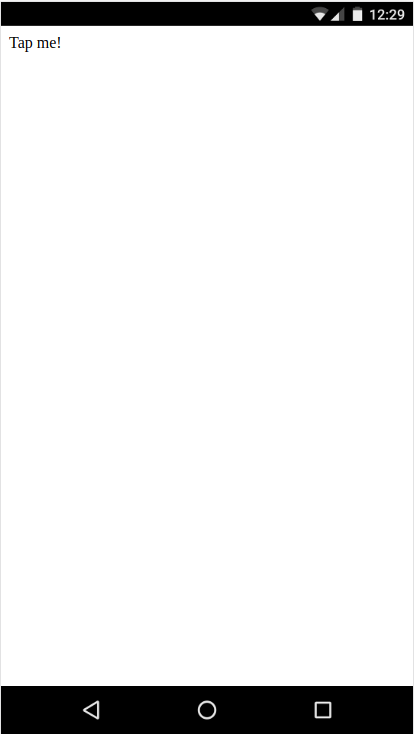
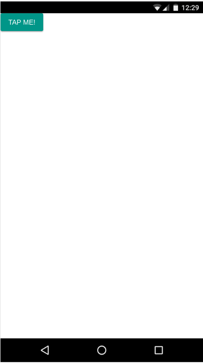
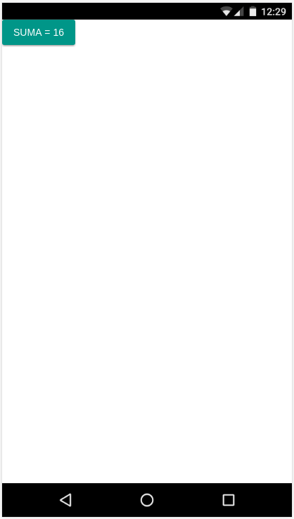
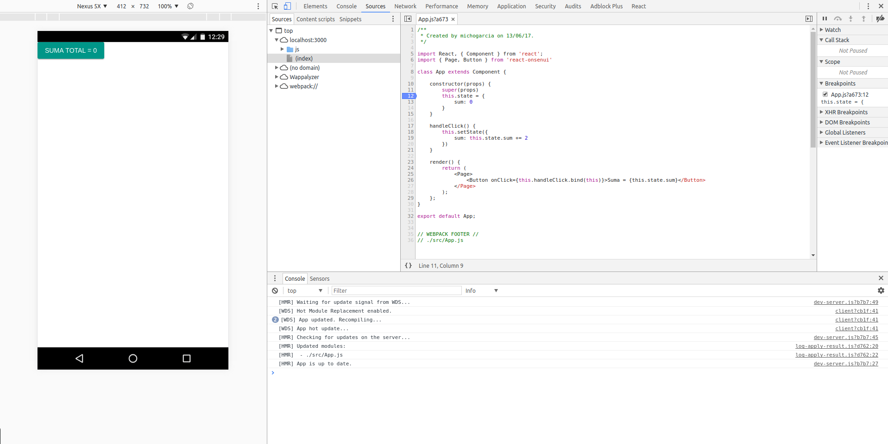

OnsenUI, React, babel-preset-react y react-hot-loader
El objetivo de este tutorial es configurar un stack de herramientas para desarrollar aplicaciones móvil híbridas,
y para ello utilizaremos el framework OnsenUI con React. Este framework dispone de herramientas
de construcción del proyecto, Monaca pero realizaremos nuestra propia configuración para poder
tener control sobre el entorno de desarrollo y comprender todos los pasos de la configuración de nuestro propio webpack.
OnsenUI
Lo primero que haremos será instalar y configurar nuestra plantilla básica con Onsen.
yarn add onsenui react-onsenui react react-dom
así tendremos todas las librerías necesarias para seguir adelante. Ahora modificaremos el nuestra aplicación para que utilice
este framework. Para ello crearemos una App.js de OnsenUI:
import React, { Component } from 'react';
import { Page, Button } from 'react-onsenui'
class App extends Component {
render() {
return (
<Page>
<Button onClick={this.handleClick}>Tap me!</Button>
</Page>
);
};
}
export default App;
y modificaremos nuestro index.js para utilizar nuestra nueva App.js:
import React from 'react';
import ReactDOM from 'react-dom';
import App from './App';
const rootElement = document.getElementById('app');
const render = Component =>
ReactDOM.render(
<AppContainer>
<Component />
</AppContainer>,
rootElement
);
render(App);
if (module.hot) {
module.hot.accept('./App', () => render(App));
}
Al arrancar nuestro webpack-dev-server obtendremos un error:
> webpack-dev-server --host 0.0.0.0
Project is running at http://0.0.0.0:3000/
webpack output is served from /js/
Content not from webpack is served from /home/michogarcia/geomati.co/TMB/dev/cordova-hmr-react-tutorial/dist
Hash: c0697a3b40373c8d8f34
Version: webpack 2.6.1
Time: 1127ms
Asset Size Chunks Chunk Names
main.js 901 kB 0 [emitted] [big] main
chunk {0} main.js (main) 305 kB [entry] [rendered]
[./node_modules/ansi-regex/index.js] ./~/ansi-regex/index.js 135 bytes {0} [built]
[./node_modules/events/events.js] ./~/events/events.js 8.33 kB {0} [built]
[./node_modules/html-entities/index.js] ./~/html-entities/index.js 231 bytes {0} [built]
[./node_modules/punycode/punycode.js] ./~/punycode/punycode.js 14.7 kB {0} [built]
[./node_modules/strip-ansi/index.js] ./~/strip-ansi/index.js 161 bytes {0} [built]
[./node_modules/url/url.js] ./~/url/url.js 23.3 kB {0} [built]
[./node_modules/url/util.js] ./~/url/util.js 314 bytes {0} [built]
[./node_modules/webpack-dev-server/client/index.js?http:/0.0.0.0:3000] (webpack)-dev-server/client?http://0.0.0.0:3000 5.68 kB {0} [built]
[./node_modules/webpack-dev-server/client/overlay.js] (webpack)-dev-server/client/overlay.js 3.73 kB {0} [built]
[./node_modules/webpack-dev-server/client/socket.js] (webpack)-dev-server/client/socket.js 897 bytes {0} [built]
[./node_modules/webpack/hot/dev-server.js] (webpack)/hot/dev-server.js 1.57 kB {0} [built]
[./node_modules/webpack/hot/emitter.js] (webpack)/hot/emitter.js 77 bytes {0} [built]
[0] multi (webpack)-dev-server/client?http://0.0.0.0:3000 webpack/hot/dev-server ./src/index.js 52 bytes {0} [built]
[./node_modules/webpack/hot/log-apply-result.js] (webpack)/hot/log-apply-result.js 1.02 kB {0} [built]
[./src/index.js] ./src/index.js 732 bytes {0} [built] [failed] [1 error]
+ 72 hidden modules
ERROR in ./src/index.js
Module build failed: SyntaxError: Unexpected token (13:12)
11 | const render = Component =>
12 | ReactDOM.render(
> 13 | <Component />,
| ^
14 | rootElement
15 | );
16 |
@ multi (webpack)-dev-server/client?http://0.0.0.0:3000 webpack/hot/dev-server ./src/index.js
webpack: Failed to compile.
babel-preset-react
Esto es debido a que webpack no es capaz de compilar nuestra síntaxis de React. Para ello deberemos configurar un preset de Babel
que sea capaz de compilar dicha síntaxis. babel-preset-react será el encargado de dicha tarea.
Primero la instalamos, y aprovechando, instalaremos el preset de babel para ES2015 que nos dará acceso a todos los plugins de ES6:
yarn add babel-preset-react babel-preset-es2015 --dev
Y configuramos babel para que use este preset. Crearemos un archivo .babelrc en el raiz de nuestro directorio y añadiremos:
{
"presets": [
["es2015", {"modules": false}],
"react"
]
}
Ahora nuestra aplicación lucirá de la siguiente manera:

¿Qué pasa con los estilos?, ¿porqué no aparecen los botones?. Para ello deberemos cargar los CSS de OnsenUI que se encarga de dar forma a los componentes.
Para ello importaremos estos estilos desde nuestro indes.js:
require('onsenui/css/onsen-css-components.css');
require('onsenui/css/onsenui.css');
Y de nuevo obtendremos un error:
ERROR in ./~/onsenui/css/onsenui.css
Module parse failed: /home/michogarcia/geomati.co/TMB/dev/cordova-hmr-react-tutorial/node_modules/onsenui/css/onsenui.css Unexpected character '@' (19:0)
You may need an appropriate loader to handle this file type.
| */
|
| @import url("ionicons/css/ionicons.min.css");
| @import url("material-design-iconic-font/css/material-design-iconic-font.min.css");
| @import url("font_awesome/css/font-awesome.min.css");
@ ./src/index.js 10:0-34
@ multi (webpack)-dev-server/client?http://0.0.0.0:3000 webpack/hot/dev-server ./src/index.js
Esto es similar a lo sucedido con React, y es que tendremos que decirle a webpack el tipo de módulos que estamos intentando
cargar. Para ello instalaremos los loaders necesarios:
yarn add css-loader style-loader file-loader --dev
y modificamos la configuración de nuestro webpack.config.js para que use estos loaders:
module: {
rules: [
{
test: /\.(js|jsx)$/,
exclude: [/node_modules/],
use: ['babel-loader'],
},
{
test: /\.css$/,
use: [ 'style-loader', 'css-loader' ]
},
{
test: /\.(ttf|otf|eot|svg|woff(2)?)(\?[a-z0-9]+)?$/,
loader: 'file-loader?name=assets/[name].[ext]'
}
],
},

react-hot-loader
Para probar react-hot-loader haremos unas pequeñas modificaciones en nuestra App.js. Añadiremos un estado a nuestro
componente para poder probar la funcionalidad que aporta react-hot-loader, ya que lo que consigue es mantener el estado
de nuestro componente a pesar de actualizar el módulo.
Como se puede observar en el código, hemos añadido un estado sum en el constructor del componente:
constructor(props) {
super(props)
this.state = {
sum: 0
}
}
Añadiremos el evento que se encargue de modificar el estado, en este caso un evento disparado desde el botón:
handleClick() {
this.setState({
sum: this.state.sum += 2
})
}
y lo enlazamos al botón:
render() {
return (
<Page>
<Button onClick={this.handleClick.bind(this)}>Suma = {this.state.sum}</Button>
</Page>
);
};
Ahora cada vez que pulsemos el botón modificará el texto del mismo:

Pero si tras haber pulsado y modificado el estado, cambiamos el texto del botón, HMR recargará nuestro botón y reiniciará el estado del componente cambiando el valor a su estado inicial.

Ahora es cuando entra en juego react-hot-loader, ya que este permitirá mantener el estado de nuestro componente tras la
recarga del código mediante HMR.
Empezaremos instalando react-hot-loader:
yarn add react-hot-loader@next --dev
modificaremos el webpack.config.js para activarlo:
entry: [
'react-hot-loader/patch',
// activate HMR for React
'./src/index.js',
// the entry point of our app
]
Por último debemos modificar nuestro punto de entrada para que utilice el AppContainer de react-hot-loader que será
el encargado de mantener el estado de nuestra aplicación. El componente raíz de la aplicación deberá estar contenido dentro
del componente AppContainer:
const render = Component => {
ReactDOM.render(
<AppContainer>
<Component />
</AppContainer>,
rootElement
)
}
render(App)
if (module.hot) {
module.hot.accept('./App', () => { render(App) })
}
De esta manera si realizamos el proceso anterior, modificando el estado de nuestro componente y a su vez modificamos el código para que actue HMR, veremos como el estado del componente se mantiene tras la actualización.
Referencias
https://thesabbir.com/hot-reloading-react-stateless-components/